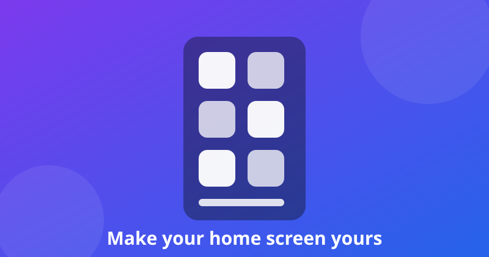

5 Best Free Launcher Apps for Android (2026)

The launcher is the app you use more than any other — it is your home screen, your app drawer, your search bar. A good one makes a budget phone feel fast and a cluttered phone feel calm. We tested the most popular free launchers on a mid-range Android phone for one question: which one makes your home screen better without slowing your phone down or locking the basics behind a paywall?
What we tested
- Speed & smoothness — animations, scrolling and app opening on a mid-range phone
- Customisation — icon packs, grids, gestures, widgets and themes
- Ads & paywalls — whether the free tier is usable, or just a demo
- Everyday use — search, app drawer, notification badges and battery impact
1. Niagara Launcher — best fully free launcher
Niagara throws away the grid entirely: a clean alphabetical list of your apps, one thumb's reach away, with your favourites at the top. It is genuinely free, with no ads and no in-app purchases for the core experience, and it makes one-handed use on big phones dramatically easier. If you want a calmer, faster phone rather than more decoration, this is the answer — install it and forget about it.
2. Nova Launcher — best for customisation
Nova is the classic power-user launcher: icon packs, grid sizes, gestures, custom drawer tabs, unread badges and near-total control over animations. The free version covers most of what people actually change; the Prime unlock is a one-time payment for gestures and a few advanced features. If you like tweaking every pixel, start here.
3. Microsoft Launcher — best if you use a PC too
Microsoft Launcher is free, clean and genuinely useful: a smart feed with calendar, to-do and sticky notes, plus the option to continue on your Windows PC. It is one of the few launchers that adds real productivity instead of just themes, and it runs smoothly on mid-range hardware. The catch is that it works best if you already use Microsoft services.
4. Smart Launcher — best for a tidy home screen
Smart Launcher sorts your apps into categories automatically, so the drawer is organised the moment you install it. Its flower-style home screen and built-in widget pages look polished with almost no setup. The free tier covers everyday use well; a few themes and extra layouts need the paid version.
5. Lawnchair — best open-source launcher
Lawnchair is a free, open-source launcher built in the style of Google's Pixel launcher, with the customisation the Pixel launcher lacks — icon packs, grid sizes and gesture options. It has no ads and no paid tier at all. The trade-off is a smaller feature set than Nova and occasional rough edges, but if you want a Pixel-style home screen with no strings attached, this is it.
Quick comparison
| Launcher | Ads | Free tier | Best for |
|---|---|---|---|
| Niagara Launcher | None | Fully usable | Speed + one-handed use |
| Nova Launcher | None | Most features | Deep customisation |
| Microsoft Launcher | None | Fully usable | PC + productivity |
| Smart Launcher | Minimal | Most features | Auto-organised drawer |
| Lawnchair | None | Fully free, open source | Pixel style, no paywall |
Note: prices and free-tier features change often — always check the Play Store listing before installing. We never link to cracked or modded apps.